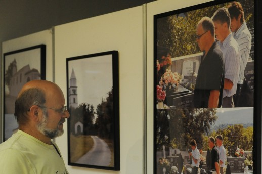

Muzej Grada Rijeke
Izložba o povijesti, običajima i budućnosti istarskih Rumunja
Rijeka - U organizaciji Muzeja grada Rijeke kao domaćina, u Rijeci su gostovali predstavnici Zavoda za kulturu vojvođanskih Rumunja – Kosta Roșu, Igor Ungur i Teodor Ursu – koji su predstavili tri publikacije Zavoda uz prigodnu izložbu slika, snimljenih za vrijeme prošlogodišnjeg boravka delegacije vojvođanskih Rumunja u Šušnjvici i Žejanama.

Motiv našeg boravka u Istri i Primorju bio je posjet istrorumunjskim naseljima u Hrvatskoj - susret s njihovom poviješću, običajima i budućnošću, kaže Kosta Roșu, koji u publikaciji "Istrorumunska sela u Hrvatskoj" objavljuje tekst pod naslovom "Priča jednog naroda koji nestaje".
Kosta Rošu navodi da istro-rumunja ima oko 1300 u Istri i oko 800 u Italiji (Trst, Venecija), Sloveniji, ali i u SAD-u i Australiji, te da je njihov arhaični jezik bio stalno predmet zanimanja lingvista i povjesničara.
Delegacija vojvođanskih Rumunja posjetila je sva naselja u kojima žive istarski Rumunji - uz već spomenute Žejane i Šušnjevicu, obišli su Noselo, Brdo, Dolišćinu, Brig, Perase, Jasenovik, Zankovce, Koštrčan i Letaj, o čemu svjedoči i niz fotografija objavljenih u spomenutoj publikaciji koja prati izložbu.
Zapisi o istarskim rumunjima našli su se i u tematskom časopisu "Piramida" koji tiska Zavod za kulturu vojvođanskih Rumunja u Zrenjaninu, a izlaze četiri broja godišnje. Na prezentaciji u Muzeju grada Rijeke, predstavljena je i ova vrlo reprezentativna publikacija, koja donositekst posvećen Rumunjima s Jadranske obale.
Iste večeri predstavljena je i knjiga dr Mirče Marana pod naslovom "Rumuni u Vojvodini" koji bilježi istraživanja prošlosti ovog naroda, kulturnom identitetu, analizirajući sva rumunjska naselja u Banatu od najstarijih vremena do danas.
Svjetlana Hribar
September 7, 2011
© 2011 Novi List